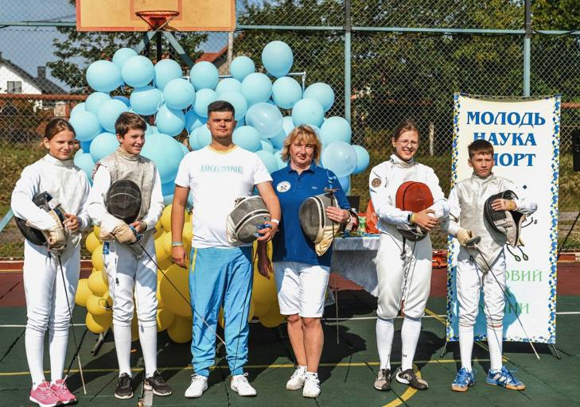

Місія організації
Формувати свідомих та здорових українців. Діти запорука світлого й успішного майбутнього України.
Покращуємо фізичні якості
Нашою метою є підтримка здоров'я юних українців. Заходи організації допомогають пропагувати правильний спосіб життя та заняття спортом. Допомагаємо розвивати силу, швидкість, витривалість. Бути здоровим це актуально!
Підтримуємо психологічний стан
Ми піклуємося про емоційний стан дітей з різниз регіонів України та розвивємо їхню стресостійкість. На наших заходах діти відчувають підтримку, командний дух та допомогу в будь-якій ситуації. Таким чином вони відволікаються від негативних подій та почувають себе у безпеці.
Розвиваємо ерудицію та інтелект
Ми сприяємо розвитку критичного мислення, логіки, психології спілкування, посилюємо теоретичні вміння практичними навичками. Кожна дитина отримує ті знання, які відповідають її віковій категорії. Анкетування різного роду допомагають визначити вихідний рівень обізнанності дітей та спрямувати їх у потрібне русло.
Формуємо патріотизм
Усі заходи організації спрямовані на формування у дітей національно-патріотичних цінностей. Так ми будуємо міцне майбутнє нашої країни, основою якого будуть свідомі, гідні, віддані, відважні діти - патріоти України.
Виховуємо загальнолюдські цінності
Реалізація наших заходів дає змогу виховати в дітях такі загальнолюдські цінності, як сміливість, рівність, дружбу, чесність, взаємодопомогу та підтримку, справедливість, милосердя, доброзичливість та гуманність.
У чому полягає діяльність організації?
Сьогодні Україна переживає одні з найскладніших часів, які залишають свій відбиток на кожній родині, людині, дитині. Щодня ми спостерігаємо велику кількість втрат: хтось втрачає власну домівку, а хтось життя. За недовгий перiод ми стикнулися з безліччю фізичних, матеріальних та психологічних проблем. Неабиякої допомоги в цей складний час потребують діти, якi власноруч не можуть впоратися з тими проблемами, що з’явилися в їхньому житті. Спільними зусиллями та ініціативами ми допомагаємо підростаючому поколінню якомога легше подолати цей етап та адаптуватися до нових реалій.
Нашим завданням є популяризація здорового способу життя, рухової активності, різних видів спорту, формування загальнонаціональних цінностей, заохочення дітей до збереження здоров’я, виховання здорового покоління з гармонійним розвитком фізичних і духовних якостей, проведення різного роду заходів для досягнення цілей.
Наша діяльність розпочалася 2022 року.
.jpg)
Діяльність організації здійснюється згідно статуту, де зазначені основні положення.
В рамках одного з проектів організація має ВЕБІНАР З ОСНОВ ВЕБ РОЗРОБКИ САЙТІВ ДЛЯ ДІТЕЙ З РІЗНИХ РЕГІОНІВ УКРАЇНИ. Вебінар спрямований на:
- надання основних теоретичних і практичних навичок щодо створення сайтів;
- опанування основ програмування;
- ознайомлення з особливостями у процесі веб-розробки сайтів.
Завдяки цьому діти навчаться:
- використовувати систему програмування,
- застосовувати її у повсякденній діяльності,
- створювати сайти,
- та в майбутньому розвиватися у цій галузі.